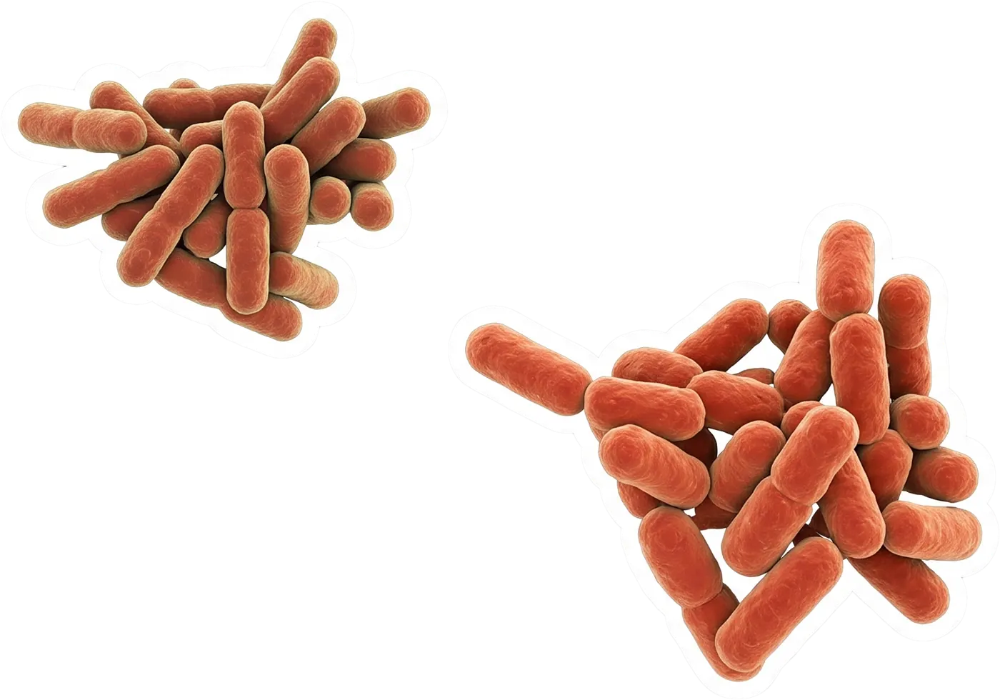
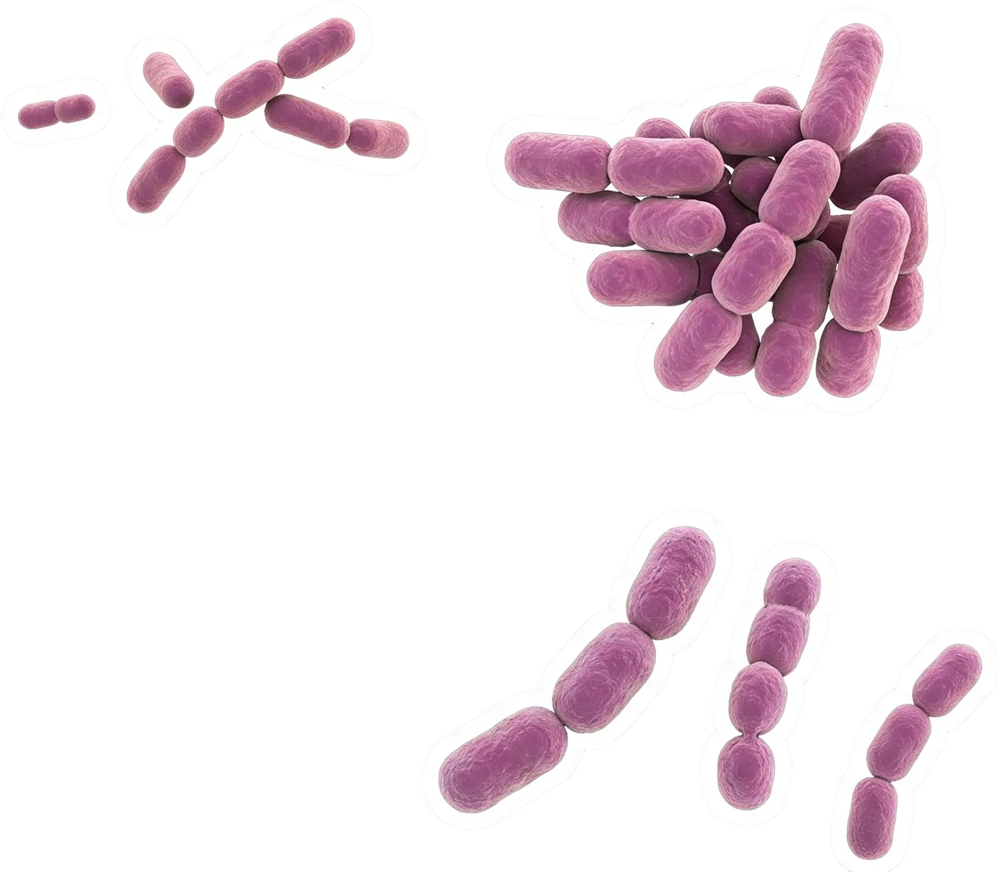
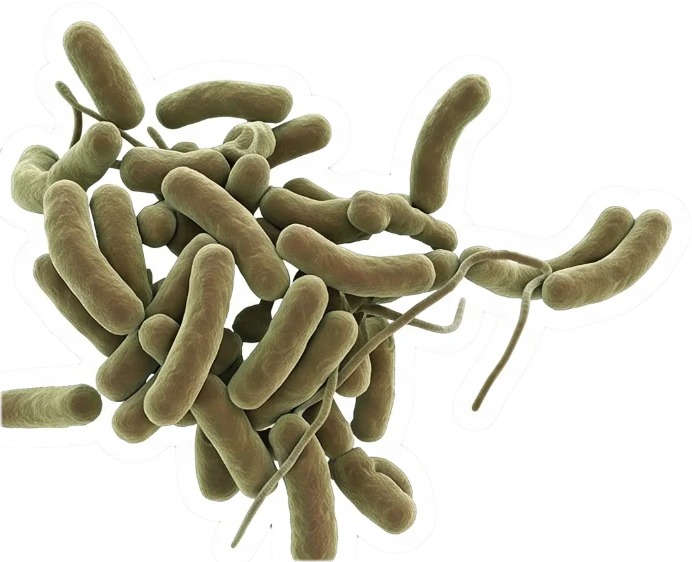

Altiplano de Atacama, norte de Chile. Entre 3.760 y 4.300 metros de altura.

La vida invisible de los salares del norte de Chile
Altiplano de Atacama, norte de Chile. Entre 3.760 y 4.300 metros de altura.

El salar de Maricunga y la laguna Santa Rosa forman un solo sistema, unidos por un canal de agua permanente.
Más al sur, la laguna del Negro Francisco está partida en dos: un lado salobre y otro hipersalino.Y la Laguna Verde guarda aguas termales, calentadas por actividad geotérmica.
31 a 47 °CLa temperatura de las termas de Laguna Verde, en pleno frío andino.
70 a 80 g/LLa sal de algunas lagunas: más del doble que el agua de mar.

En la orilla, capas de colores cubren el fondo. Son tapetes microbianos: ciudades de microbios.

El equipo recolectó tapetes, sedimentos y costras de sal, y midió temperatura, acidez, salinidad y oxígeno.
Luego leyó el ADN de cada muestra para saber quién vive ahí.


Pseudomonadota y Bacteroidota, dos grupos de bacterias, dominan casi todo el sistema.

Donde el agua es menos salada aparecen Cyanobacteriota y Chloroflexota, bacterias que aprovechan la luz del sol.


Donde la sal se vuelve extrema aparecen las arqueas, como Halobacteriota y Nanoarchaeota.
Las arqueas no son bacterias: son otro dominio de la vida, especialistas en vivir al límite.
La sal es el factor que más decide quién vive en cada lugar. Pero el lugar mismo pesa aún más.
206 de 1.374Tipos de microbios compartidos entre aguas salobres e hipersalinas. El resto es propio de cada lugar.
Laguna Verde es la más distinta de todas: una comunidad propia, moldeada por el calor.

Donde hay menos sal, los microbios hacen fotosíntesis y procesan nitrógeno.
Donde hay más sal, predominan los que obtienen energía de compuestos químicos, sin depender de la luz.El ciclo del azufre, en cambio, ocurre en casi todas las lagunas, saladas o no.
Un pequeño grupo de especies clave conecta toda la red, de laguna en laguna.
Al hacer fotosíntesis y reciclar nitrógeno y azufre, los microbios son la base de la vida en las lagunas.De esa base viven pequeños invertebrados, y de ellos, los flamencos que se alimentan en estas aguas.
Flamencos, vicuñas, guanacos y aves migratorias dependen de estas lagunas y de las vegas que las rodean.
Conocer lo que hay ahí es el primer paso para comprender y valorar este ecosistema.
Basado en el artículo publicado en Frontiers in Microbiology (2026) por el Proyecto Anillo ANID ATE240015 OASIS, Universidad del Desarrollo. Prototipo de maqueta.